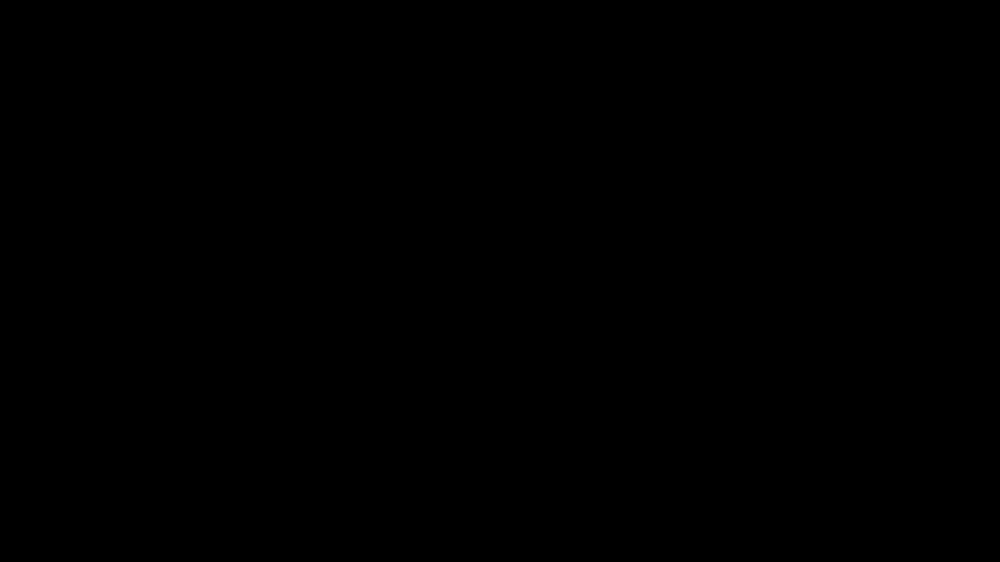

Attention is All you Need
Overview
Abstract
The dominant sequence transduction models are based on complex recurrent or convolutional neural networks in an encoder-decoder configuration. The best performing models also connect the encoder and decoder through an attention mechanism. We propose a new simple network architecture, the transformer, based solely on attention mechanisms, dispensing with recurrence and convolutions entirely. Experiments on two machine translation tasks show these models to be superior in quality while being more parallelizable and requiring significantly less time to train. Our model achieves 28.4 BLEU on the WMT 2014 English-to-German translation task, improving over the existing best results, including ensembles by over 2 BLEU. On the WMT 2014 English-to-French translation task, our model establishes a new single-model state-of-the-art BLEU score of 41.8 after training for 3.5 days on eight GPUs, a small fraction of the training costs of the best models from the literature. We show that the transformer generalizes well to other tasks by applying it successfully to English constituency parsing both with large and limited training data.
Summary
Key Points
- Self-attention replaces recurrence entirely
- Scaling by √d_k prevents small gradients in softmax
- Multi-head attention captures diverse dependencies
- Positional encodings provide sequence order
Detailed Summary
The Transformer architecture relies entirely on attention mechanisms, dispensing with recurrence and convolutions.
Scaled dot-product attention computes Attention(Q,K,V) = softmax(QK^T/√d_k)V, where the scaling prevents vanishing gradients.
Multi-head attention runs h attention functions in parallel, allowing the model to jointly attend to information from different representation subspaces.
Positional encodings using sine/cosine functions inject sequence order information since the model contains no recurrence.
Key Equations
Scaled Dot-Product Attention
Computes attention weights from Q·K dot products, scaled to prevent vanishing gradients, then applies to values.
Multi-Head Attention
Runs h attention operations in parallel with different projections, concatenating results.
Visual Explanation
